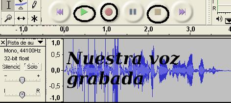
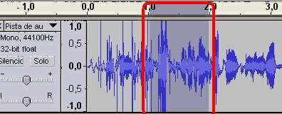
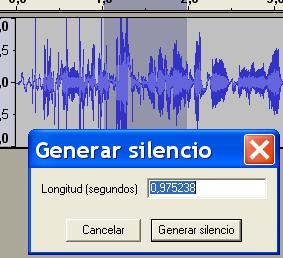
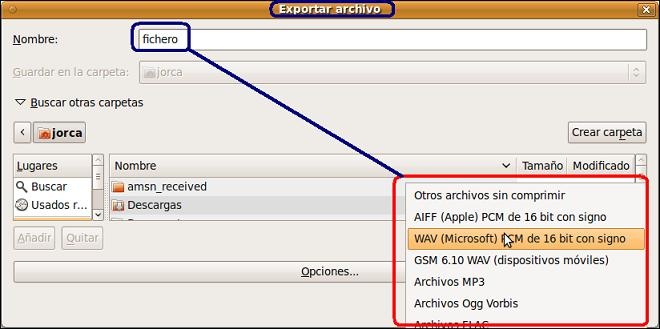

Edición de Audio y video
3. Grabar nuestra voz y aplicar efectos
Antes de iniciar este
apartado, tu micro debe funcionar (establece las configuraciones de tu
equipo) y los altavoces o auriculares han de estar activos.Si has realizado el apartado 1 de este tema puedes seguir.
La idea general es
grabar nuestra voz y proceder a modificar algunos aspectos, tales como
copiar, cortar, introducir un efecto y exportar el mismo a formato ogg.
En el tema anterior pudimos comprobar como podríamos grabar nuestra voz, bien utilizando el grabador del sistema, bien utilizando el editor Audacity.
-
Abrimos el audacity o vamos a Archivo / nuevo.
-
Utilizando la barra de control presionamos en el botón de grabar.

-
Al finalizar nuestra pequeña grabación (durante la cual decimos un comentario que será el que grabaremos). Para finalizar haz clic en detener.
-

-
Ahora ya disponemos de una pista que podemos reproducir y trabajar sobre ella.
- Selecciona una parte de la pista. En la imagen la zona oscura es la zona seleccionada.

- Entra en Generar / Silencio.

- Reproduce desde el comienzo toda la pista. Observa como se ha silenciado parte (la anteriormente seleccionada). Procede a Editar / Deshacer Silenciar.
- Selecciona un par de segundos de tu grabación. En Efecto / Cambiar tono. Indica desde A hasta G. Observa como ha cambiado tu voz.
-

- Guarda el proyecto en una carpeta nueva y observa como se genera un fichero una carpeta asociada.
- Exporta el fichero de audio a formato ogg. Archivo / Exportar. Indica el nombre del fichero, selecciona el tipo de fichero ogg Vorbis y dale a guardar.
- 
- Selecciona el fichero que has exportado y reproduce el mismo utilizando un reproductor de sonido.
- Ya disponemos de un fichero de sonido generado y editado de forma muy elemental. El alumno ya puede investigar otros tipos de exportaciones y generar efectos diferentes en las pistas que componen nuestra grabación.
Video explicativo realizando los pasos indicados en el apartado anterior.
Jo.R.C.A. 2004 - 2011

Edición de Audio y Video con Software Libre by José Ramón Cerdeira Alonso is licensed under a Creative Commons Reconocimiento-No comercial-Compartir bajo la misma licencia 3.0 España License